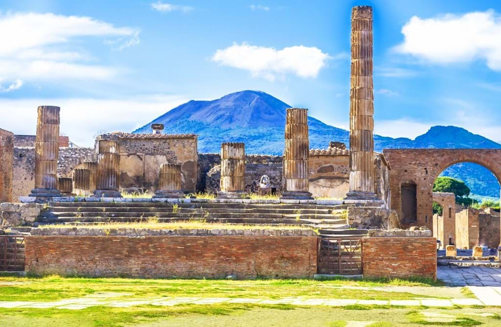
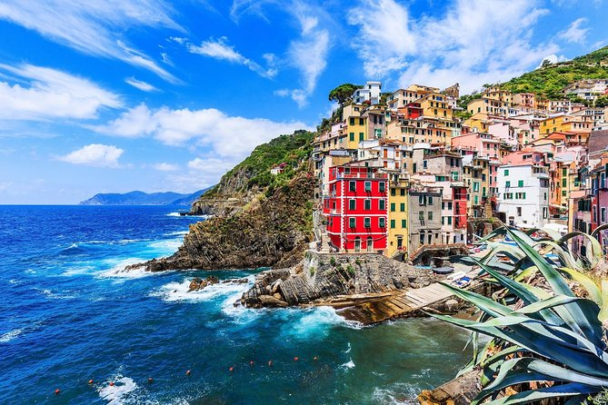

Italia
Italia țâșnește din centrul Europei în Marea Mediterană precum o arcă a lui Noe, plină de minunății, înconjurată de alte mici insule, Sardinia, Sicilia, Capri sau Lipari, care sunt adevărate paradisuri. Este imposibil să te plictisești în Italia. Marea limpede, azurie, la est cât și la vest, mâncarea tradițională atât de cunoscută, monumente si opere arhitecturale atât de bine păstrate încă din timpurile Imperiului Roman. 3 locuri fascinante din această țară sunt prezentate în detaliu mai jos:
1.Colosseumul din Roma


Colosseum sau Colosseo, initial Amfitatrul Flavian, este un amfiteatru in centrul orasului Roma, Italia, cel mai mare construit vreodata in Imperiul Roman. Colosseumul este construit din beton si piatra. Acesta este considerat a fi, una dintre cele mai mari opere de arhitectura si inginerie romana. Ocupand un site la est de Forumul Roman, constructia sa a inceput in 72 d.Hr., sub imparatul Vespasian si a fost finalizata in 80 d.Hr. sub Titus, cu modificari ulterioare facute in timpul domniei lui Domitian domniei (81-96). Colosseo (Colosseum) este inconjurat de colinele Coelius, Palatin si Esquilin. Cel mai bine este sa mergeti dinspre Via dei Fori Imperiali, de unde puteti aprecia la justa valoare dimensiunile constructiei. Admirati mai intai exteriorul, un tur ghidat sau un audio-ghid va vor ajuta sa va dati seama cum arata arena in perioada sa de glorie.
Cunoscuta inca din secolul al VIII-lea drept Colosseo, arena a fost construita de catre trei imparati flavieni, Vespasian,Titus si Domitian. Lucrarile au inceput in 72 d.Hr., iar primele lupte au avut loc abia in anul 80. Acesta a fost primul amfiteatru zidit construit la Roma, combinand ingenios grandoarea cu simtul practic. Luptele au fost organizate aici pana la sfarsitul Imperiului, in secolul al VI-lea. Colosseum-ul a fost folosit pentru a gazdui spectacole de gladiatori, precum si o varietate de alte evenimente.
In Evul Mediu, Colosseumul a servit drept fortareata, iar incepand cu secolul al XV-lea a fost sursa de materiale de constructii pentru unele dintre cele mai frumoase palate din Roma. Pana la sfarsitul anilor 1700 a devenit o ruina romantica, iar in anul 1750 a fost sfintit ca memorial al martirilor crestini. Proiectele de conservare a Colosseumului au inceput in secolul al XIX-lea si continua si astazi.
Pentru planuri de vacanță:


2.Pompeii

În apropierea malurilor Golfului Napoli, vulcanul Vezuviu moţăie tăcut, cu craterul deschis larg spre cer, asemenea unei guri ce caută să respire cât mai mult din briza însorită a mării. Mulţi vizitatori urcă cei 1277 m, până pe marginea neregulată a craterului, pentru a privi în jos, spre necunoscutul adâncit în tumultul pământului. Nu se ştie când va erupe vulcanul; până atunci, milioanele de oameni care populează Napoli şi aglomeratele lui vecinătăţi îşi văd nepăsători de viaţa lor, ca şi cum ar fi imposibil ca ceva să strice frumuseţea naturală a acestei zone. Însă între Napoli şi Coasta Amalfi, cea mai pitorească şi mai celebră zonă de coastă a Italiei, oraşele Ercolano (Herculaneum) şi, mai cu seamă, Pompei (Pompeii), dezvăluie prin vestigiile lor consecinţele tragice pe care le-a avut în trecut îndrăzneala oamenilor de a nesocoti forţa distrugătoare a nestinsului Vezuviu.
Anul 79 e. n., ziua de 24 august. Din craterul vulcanului Vezuviu, o coloană neagră s-a ridicat ameninţătoare şi, întunecând atmosfera, s-a aruncat sălbatic asupra oraşului Pompei. A surprins brutarul ce tocmai scotea o pâine din cuptor, pictorul ce se pregătea să umple de culoare un perete, o mamă ce planta trandafiri în grădină şi un căţel păzindu-şi curtea. Timp de 12 ore, piatra ponce şi cenuşa azvârlite din adâncul vulcanului au acoperit definitiv oraşul şi viaţa celor aproape 25.000 de locuitori, oprită astfel în secvenţe domestice de o gingăşie dramatică, sub un strat de 6 metri de materie neagră. Şi cei ce au încercat să fugă spre malul mării au fost răpuşi de gazele şi cenuşa pătrunse în plămâni.
Istoria Pompei-ului roman s-a curmat brusc şi şi-a împietrit timpul său pentru sute de ani în întuneric, până când primele săpături din 1748 au început să scoată la iveală străzile, casele, grădinile, băile, oalele, frescele, seminţele, pâinile, monedele, trupurile. Azi, arheologii au descoperit 44 din cele 66 de hectare pe care se întindea oraşul în momentul erupţiei, iar toate detaliile despre viaţa de zi cu zi a romanilor au fost înţelese din artefactele recuperate cu migală, cea mai mare parte din ele păstrată la Muzeul Naţional de Arheologie din Napoli.
Pentru planuri de vacanță:
3.Cinque Terre

Regiunea Cinque Terre cuprinde cinci orasele (“cinque terre” inseamna “cinci tinuturi” in italiana) care sunt legate de stancile Liguriei de-a lungul coastei vestice italiene. De regula, cand te gandesti la zona asta o privesti ca pe un tot unitar, orasele urmand a fi vizitate toate impreuna. In principal datorita faptului ca sunt situate foarte aproape unul de celelalt, astfel incat poti ajunge din primul in ultimul in numai cateva ore. Trebuie avut insa in vedere ca sunt cinci orase distincte, fiecare avand propria sa personalitate.
Monterosso al Mare, uneori cunoscut sub simpla denumire de Monterosso, este cel mai mare dintre cele cinci si cel mai vizitat – in special, de catre tineri. Este singura asezare care are o lunga si frumoasa deschidere spre plaja chiar in oras (in celelalte, ca sa ajungi la plaja trebuie sa mergi un pic pe jos, sau plajele sunt foarte mici sau stancoase).
Vernazza are probabil cea mai frumoasa piata centrala, asezata chiar langa apa si un turn incantator al bisericii intr-o parte. Ruinele castelului se afla pe unul din dealurile de unde se poate vedea intreaga asezare.
Corniglia este singurul oras care nu e asezat chiar langa apa – este in varful versantului si in orice directie ai merge, trebuie sa urci o panta destul de abrupta. Nu e foarte obositor – niciun oras in Cinque Terre nu te oboseste, dar ca sa ajungi in varf trebuie sa depui putin efort. Seara, dupa ce toti excursionistii pleaca, zona se mai calmeaza si e mult mai multa liniste.
Manarola este mai rustica si mai putin slefuita decat vecinii sai din nord; pentru acest motiv, multi gasesc aceasta asezare mai plina de farmec si mai putin populata cu turisti. Portiunea de drum dintre Manarola si Riomaggiore este cel mai usor de parcurs. Este asfaltata, asa ca poti face calatoria chiar daca ai un bebelus in carucior si este denumita Via dell’Amore – drumul dragostei.
Riomaggiore isi face aparitia din apa iar inclinarea are accente dramatice (nu pleca de langa valiza ta cu roti in timp ce urci panta, pentru ca s-ar putea sa te trezesti cu ea in mare) asa ca te poti indeparta de intinderile albastre si te simti ca si cum ai fi in cu totul alt oras. Asezarea este foarte populara printre turistii germani.
Pentru planuri de vacanță: